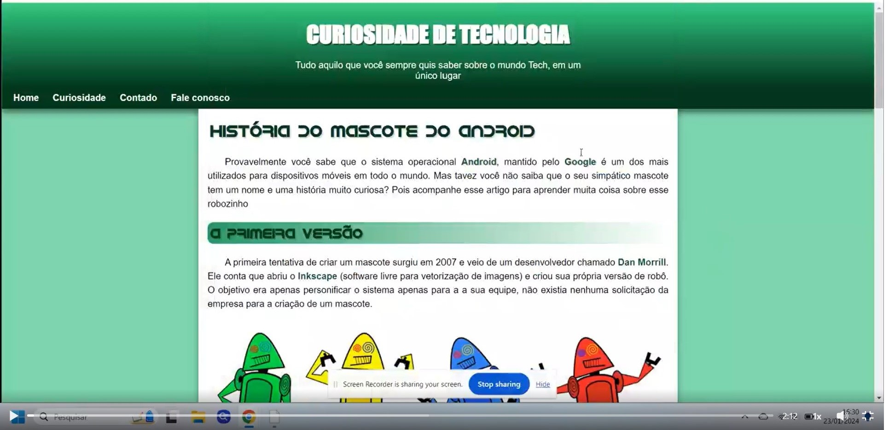
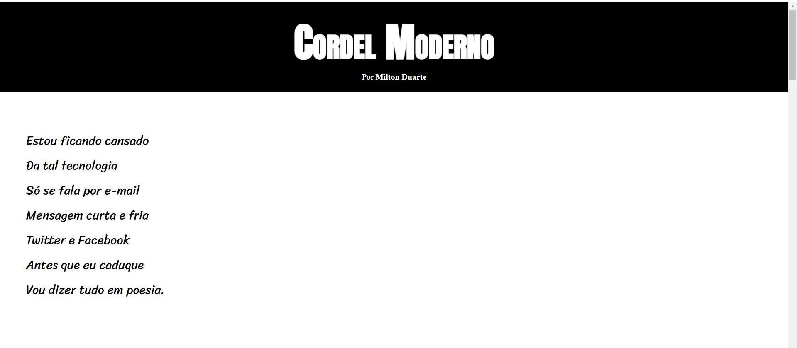
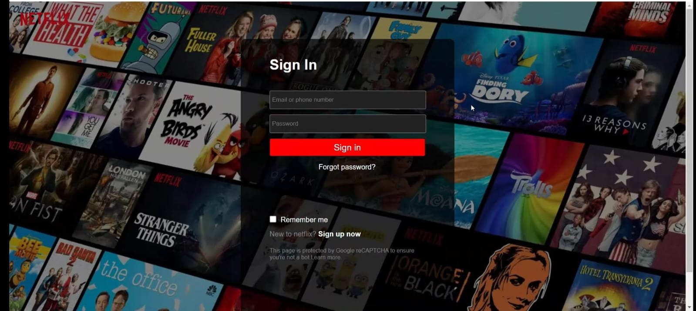
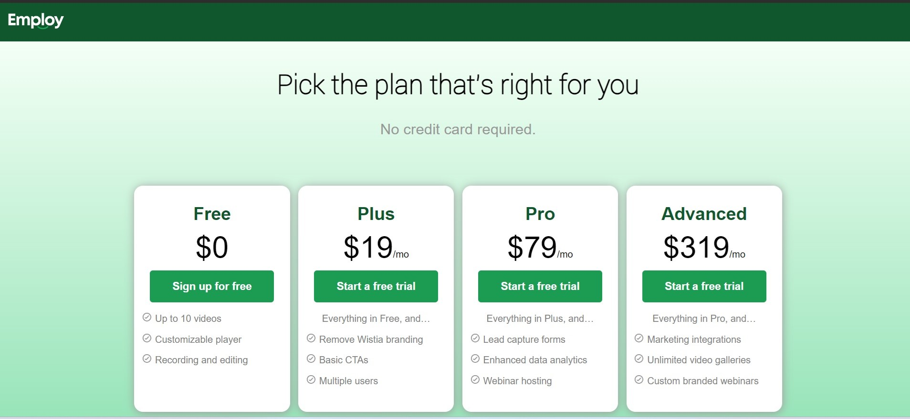

Criei esse site apenas para juntar todos os mini projetos que criei até hoje. Além de colocar em prática os conhecimentos de media queries que estou estudando também. Aqui estão os projetos:
- Primeiro projeto (responsivo)
Esse foi o primeiro que fiz, vi ele no canal "Curso em vídeo" do professor Gustavo Guanabara e tentei replicar em casa. Confesso que foi um pouco difícil por ser a primeira vez fazendo um projeto.
- Site Cordel (Efeito Parallax)
Esse foi um mini projeto também feito no curso do professor Gustavo Guanabra. Consegui aprender um pouco mais sobre como funcionam e como trabalhar com as imagens usando o CSS.
- Clone da tela de login da Netflix
Dessa vez queria fazer algo diferente, então nesse projeto tentei clonar a tela de login da Netflix por conta própria e esse foi o resultado. Apresenta apenas o front-end.
- Layout de Precificação
Nesse projeto eu fiz para um desafio da empresa employ na qual era pedido um layout de precificação e consegui chegar nesse resultado.